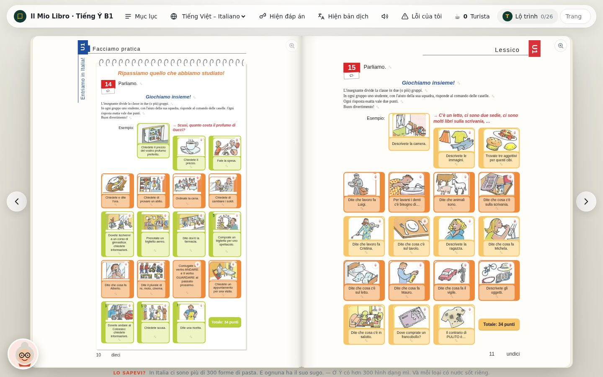

Esercizi corretti all'istante
Completamenti, scelte multiple, abbinamenti, moduli e giochi a caselle: si risponde direttamente sulla pagina e si vede subito cosa è giusto e cosa no.
Exercises are answered on the page and checked instantly.